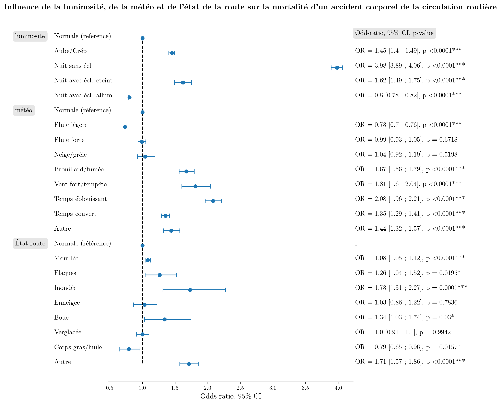

Étude des accidents corporels de la circulation routière entre 2005 et 2021 - Partie 2 : Influence des conditions météorologiques et de luminosité sur la gravité des accidents
La gravité des accidents dépend-elle de la luminosité ?
Cette partie de l'étude porte sur l'ensemble de la période 2005-2021 hors année 2020. En effet, les confinements pourraient biaiser les résultats. En comptabilisant le nombre de blessés, tués et personnes indemnes lors des accidents en fonction des conditions de luminosité, nous obtenons le tableau de contingence suivant :
| Indemnes | Tués | Hospitalisés | Blessés légers | |
|---|---|---|---|---|
| Jour | 732 839 | 37 790 | 329 312 | 623 798 |
| Aube/Crépuscule | 58 738 | 4 797 | 32 470 | 52 372 |
| Nuit sans éclairage | 68 569 | 16 577 | 64 850 | 61 838 |
| Nuit avec éclairage éteint | 7 855 | 714 | 4 165 | 7 836 |
| Nuit avec éclairage allumé | 159 579 | 7 171 | 70 363 | 165 063 |
Le test du ùúí¬≤ permet d'affirmer qu'il existe une association significative entre gravit√© et luminosit√© au risque de 5% (ùúí¬≤(12)=48 676 ; p<0.0001***). La force de l'association est faible (V de Cramer √©gal √† 0.07). Le mosaicplot ci-dessous montre une surrepr√©sentation des morts et bless√©s graves lors des accidents la nuit sans √©clairage et lors de l'aube et du cr√©puscule. En revanche, ils sont sous-repr√©sent√©s lors des accidents en plein jour pour lesquels ce sont les personnes indemnes qui sont surrepr√©sent√©es. La nuit dans les lieux avec √©clairage public, il y a surrepr√©sentation des bless√©s l√©gers.
La gravité des accidents dépend-elle des conditions météorologiques ?
Nous pouvons faire le même type d'étude sur l'influence des conditions météorologiques.
| Indemnes | Tués | Hospitalisés | Blessés légers | |
|---|---|---|---|---|
| Soleil | 834 124 | 52 052 | 401 595 | 733 001 |
| Pluie légère | 104 465 | 5 979 | 46 804 | 103 245 |
| Pluie forte | 21 792 | 1 725 | 11 812 | 19 865 |
| Neige/grêle | 6 516 | 491 | 3 372 | 5 376 |
| Brouillard/fumée | 6 326 | 1 131 | 5 099 | 4 910 |
| Vent fort/tempête | 2 090 | 342 | 1 671 | 1 876 |
| Temps éblouissant | 12 664 | 1 236 | 8 020 | 7 333 |
| Temps couvert | 33 609 | 3 220 | 18 113 | 29 726 |
| Autre | 5 930 | 860 | 4 637 | 5 514 |
L√†-encore, le test du ùúí¬≤ permet d'affirmer qu'il existe une association significative entre gravit√© et conditions m√©t√©o au risque de 5% (ùúí¬≤(24)=8 136 ; p<0.0001***). La force de l'associaition est faible (V de Cramer √©gal √† 0.02). Le mosaicplot montre une surrepr√©sentation des tu√©s et bless√©s graves dans toutes les situations sauf les conditions normales et de pluie l√©g√®re. Lors de conditions normales, les personnes indemnes sont surrepr√©sent√©es et par temps de pluie faible, les blessers l√©gers sont surrepr√©sent√©s.
La gravité des accidents dépend-elle de l'état de la surface de la route ?
√Ä nouveau nous pouvons utiliser un test du ùúí¬≤ pour d√©terminer s'il y a association entre gravit√© et √©tat de la surface de la route.
| Indemnes | Tués | Hospitalisés | Blessés légers | |
|---|---|---|---|---|
| Normale | 816 662 | 51 426 | 392 165 | 705 418 |
| Mouillée | 170 149 | 12 479 | 83 494 | 165 340 |
| Flaques | 1 044 | 127 | 842 | 1 133 |
| Inondée | 450 | 73 | 309 | 409 |
| Enneigée | 3 315 | 253 | 1 734 | 2 710 |
| Boue | 306 | 67 | 422 | 346 |
| Verglas | 4 626 | 671 | 4 249 | 4 822 |
| Corps gras/huile | 1 270 | 125 | 1 134 | 2 323 |
| Autre | 3 290 | 674 | 3 727 | 3 521 |
le test du ùúí¬≤ permet d'affirmer qu'il existe une association significative entre gravit√© et √©tat de la surface de la route au risque de 5% (ùúí¬≤(24)=5 216 ; p<0.0001***). La force de l'associaition est faible (V de Cramer √©gal √† 0.02). Le mosaicplot montre une surrepr√©sentation des tu√©s et bless√©s graves dans toutes les situations sauf les conditions normales et de route mouill√©e. Pour cette derni√®re situation, les tu√©s sont surrepr√©sent√©s mais les bless√©s graves sont sous-repr√©sent√©s. Lors de conditions normales, les personnes indemnes sont surrepr√©sent√©es.
Mortalité des accidents : modèle de régression logistique
Nous pouvons étudier l'influence de chacun des facteurs précédents mais cette fois sur la mortalité des accidents. Pour cela, nous pouvons utiliser un modèle de régression logistique pour calculer les Odds Ratios de chaque facteur par rapport à des conditions « normales ». Le modèle donne les résultats regroupés dans le forestplot suivant :

On remarque que la luminosité est le facteur ayant le plus d'influence. Particulièrement, par rapport à un accident ayant lieu en plein jour, un accident a bien plus de chances d'être mortel s'il a lieu la nuit sur une route sans éclairage (O.R. = 3.98 ; C.I. = [3.89 ; 4.06] ; p<0.0001***). De manière générale, des conditions de faible luminosité sans éclairage augmente le risque qu'un accident soit mortel par rapport à . En revanche, un accident ayant lieu la nuit dans une zone avec éclairage public a moins de chance d'être mortel qu'un accident en plein jour (O.R. = 0.8 ; C.I. = [0.78 ; 0.82] ; p<0.0001***). Il est important ici de rappeler qu'il ne s'agit pas d'un lien de cause à effet et il serait intéressant d'essayer de comprendre ce résultat. On peut notamment remarquer qu'un accident ayant lieu dans une zone avec éclairage public se situe généralement en agglomération alors que la catégorie « plein jour » regroupe les accidents de tous les types de lieux. Cela peut avoir une influence.
Concernant les conditions météorologiques, un accident ayant lieu par pluie légère a moins de chances d'être mortel qu'un accident par conditions normales (O.R. = 0.73 ; C.I. = [0.7 ; 0.76] ; p<0.0001***). On ne peut pas conclure à un effet significatif de la grêle, la neige ou d'une pluie forte. En revanche, les autres conditions augmentent le risque qu'un accident soit mortel par rapport à des conditions normales.
Enfin, concernant l'√©tat de surface de la route, une route mouill√©e/inond√©e/avec flaques augmentent le risque qu'un accident soit mortel par rapport √† une route s√®che. Les autres effets sont non significatifs √† l'exception du verglas mais dont l'influence est moins important que celui d'une route mouill√©e. Il est important de noter que l'effet du verglas est bien plus important si on utilise un mod√®le de r√©gression logistique ne tenant compte que de l'√©tat de la route. Comment expliquer que l'effet soit r√©duit dans le mod√®le tenant compte des trois variables ? En fait, l'√©tat de la route est li√© aux conditions m√©t√©os (ùúí¬≤(20)=2 137 610 ; p<0.0001***) et aux conditions de luminosit√© (ùúí¬≤(16)=58 882 ; p<0.0001***). Dans le mod√®le avec trois variables explicatives, l'effet du verglas a √©t√© absorb√© par les effets des conditions m√©t√©os et de luminosit√©.